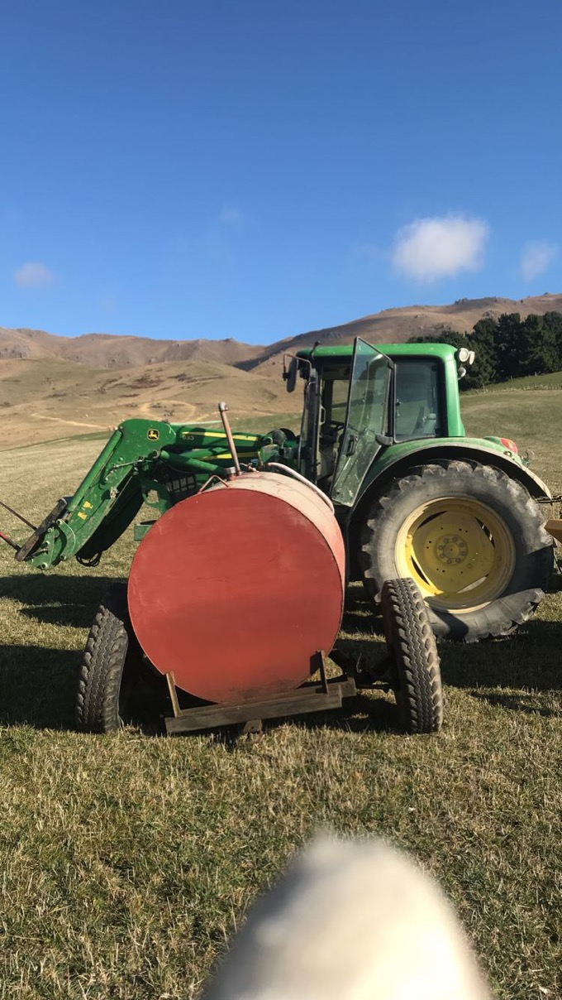

John-Deere
Story
 John Deere was a blacksmith who developed the first commercially successful, self-scouring steel plow in 1837 and founded the company that still bears his name. Deere was born in 1804 in Rutland, Vermont. After his father was lost at sea when he was four years old, Deere was raised solely by his mother. As a young man, he won acclaim for his workmanship and ingenuity as a blacksmith. When the New England economy collapsed in 1836, he followed other Vermonters to Illinois, where he established a blacksmith shop in Grand Detour. Shortly after arriving, Deere learned from his farmer customers that the commonly used cast-iron plows of the day performed poorly in the sticky soil of the Midwest prairie. Soil clung to the plow bottoms, and farmers had to stop and scrape off the dirt every few feet. Convinced that a plow with a highly polished surface would shed the sticky soil as it moved through the field, Deere made a plow using steel from a broken sawblade. The need for a self-scouring plow was so great, it is said hundreds of people gathered at the farm of Lewis Crandall near Grand Detour to see the young blacksmith test his new product. It wasn’t long before manufacturing plows became not only Deere’s identity, but his business as well. In 1848, Deere moved his growing operation 70 miles southwest to Moline, Illinois, on the east bank of the Mississippi River. The river provided water power for running a factory, as well as riverboats for bringing in raw materials and moving plows to market. Soon, Deere’s company was making 1,000 plows a year. Business boomed as Deere established a reputation for both his plows and his principles. Those same principles guide Deere & Company to this day. Among them was his insistence on selling only high-quality products. In 1868, Deere’s business was incorporated under the Deere & Company name. From his arrival in Moline, Deere was actively involved in civic activities, and in 1873 he became the second mayor of Moline. John Deere died in 1886, with his heirs leading the company for the next century.